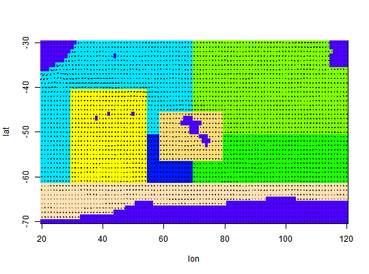
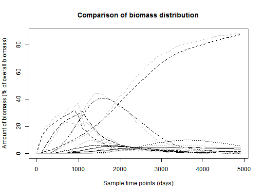

This function calculates the movement of biomass between given polygons as
determined by the movement parameters. It uses the movement tensor
calculated by a numerical tracer experiment implemented by the function
particle.tracking.
biomass.tracking(mk, times, start_setup = NULL, infl_poly = 1, infl_time = 10, insert_t_step = NULL, silent = TRUE, S = NULL)
| mk | An object of class |
|---|---|
| times | A vector giving the time-points at which the output is wanted. |
| start_setup | A vector giving a starting biomass distribution. Specify either this or the next two arguments. |
| infl_poly | The biomass flows in from this polygon. Has to have positive inflow from the boundary. |
| infl_time | The number of time steps over which the biomass is to be inserted. Only used if start\_setup==NULL. |
| insert_t_step | The width of the time steps over which the biomass is to be inserted. Only used if start\_setup==NULL. |
| silent | If FALSE, the movement is shown in text and graphic and the user has to hit 'enter' after every time step. |
| S | Matrix describing the polygon structure, needed if silent == FALSE. |
A matrix of dimension 'number of polygons' x 'number of time steps requested'. Each column contains the biomass distribution in the respective time step.
Two different starting conditions for the flow of biomass can be given: A
starting distribution of biomass can be specified or it can flow into the
area through the specified inflow polygon over a given number of time steps.
In this case, time steps refers to the differences between the first two
entries in the times vector.
An object of class movement\_kernel is a list of the following items:
P: A list of the movement tensors for each polygon, where P[[poly]][i,j,k]
describes the probability of a particle leaving polygon poly towards
polygon j in the case that it entered from polygon i and is in
age class k. nk: A list containing the neighbours for each polygon.
This is used to translate between the local neighbourhood numbers (used in
P) to the global numbers of the polygons. no\_age\_classes: The number of
age classes used in the movement kernel. delta: Width of the age classes
used in the movement kernel. retention: Logical to indicate whether
retention in the final age class has been enabled or not.
[[poly]: R:[poly
TODO: my report
particle.tracking,
particle.tracking.compare, biomass.compare,
prepare.arena
# Use more particles if realistic results are needed mk = particle.tracking(arena,400,5000,diffusion=0.6,graphics=TRUE)# Now estimate the biomass movement N1 = biomass.tracking(mk,seq(0,4900,by=100),infl_poly=2) # Get a particle tracking result to compare the above to N2 = particle.tracking.compare(arena,400,100,50,diffusion=0.6,infl_poly=2)#> Warning: Particles left in domain after the time for particle tracking elapsed:#> Warning: 45#> [1] 39.460235 2.052659